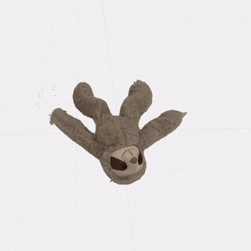

MorphicMorphic: From observed motion to editable objects
Research engineering (2026)
Explore how captured shape, observed motion and simulation become an interactive object. Play the sloth's recorded motion, edit its response, or inspect a glove reconstructed from photographs. Animated comparisons explain the technology and show where it falls short.